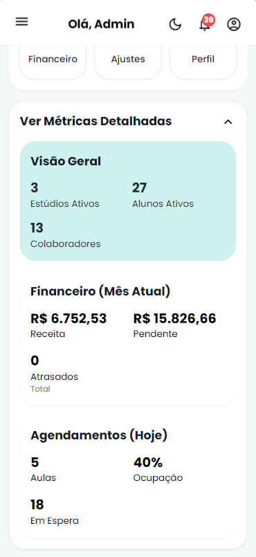
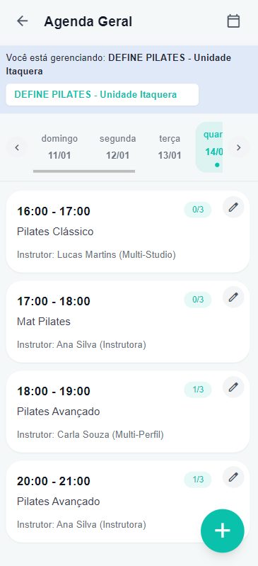
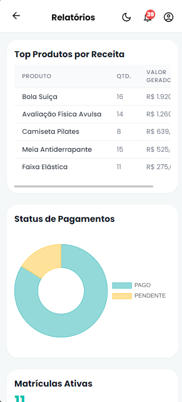

Dashboard Admin
Define Pilates - Gestão SaaS
SaaS Multi-tenant para gestão de estúdios. Centraliza agendamentos, financeiro e BI em uma interface intuitiva, permitindo escalabilidade e isolamento de dados.
O Desafio: Unir um time multidisciplinar com níveis heterogêneos e garantir a entrega de uma arquitetura complexa.
Solução Técnica: Backend em Django REST com middleware de tenant. Uso de Swagger como "língua universal" para integração Front/Back.
Meu Papel (Tech Lead): Liderança Hands-on (360º), mentoria técnica via Code Review e implementação de TDD.
Multi-tenancy
BI & Analytics